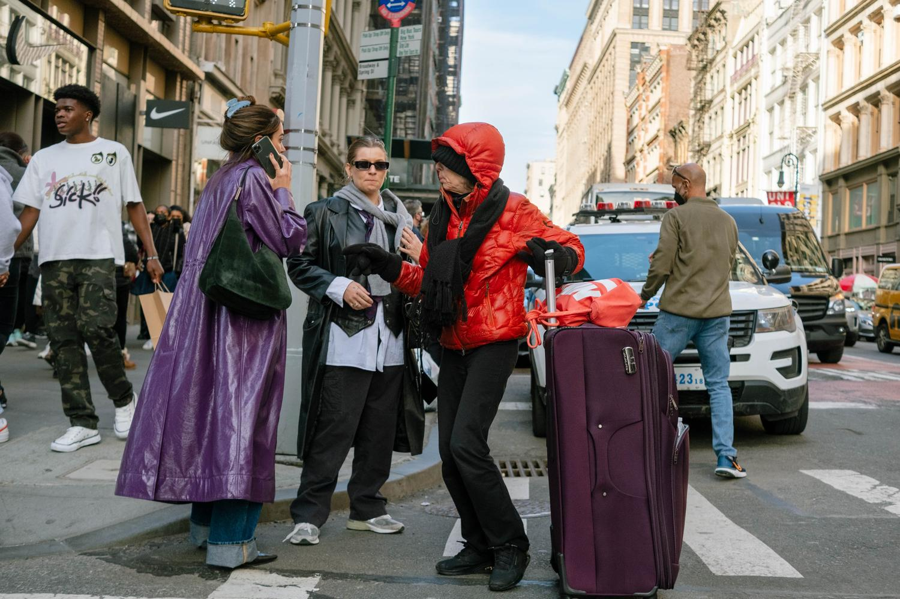
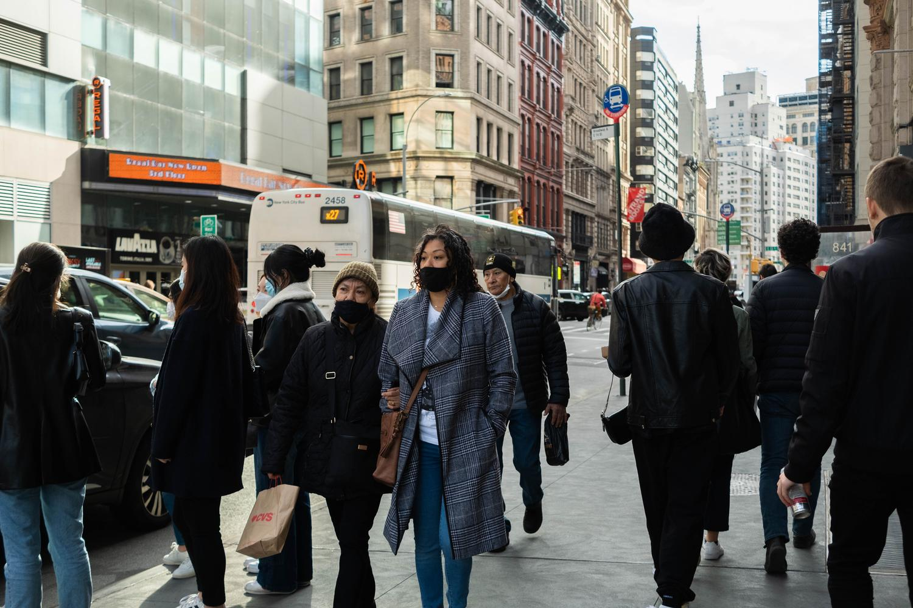

I really stunned myself with this photo above. I was like wow! This was the first “street” photo that I really felt was unique and it such a happy accident.

Look at the groups of three! I really like that guy’s bucket hat. Another happy accident.
I felt so uncomfortable trying street photography, but I was so surprised by what I ended up with. There’s a lot of debate on whether you must ask permission to take someone’s photo. This day, I didn’t ask. It felt like a huge violation. This also makes me wonder why so many street photographers are white men.